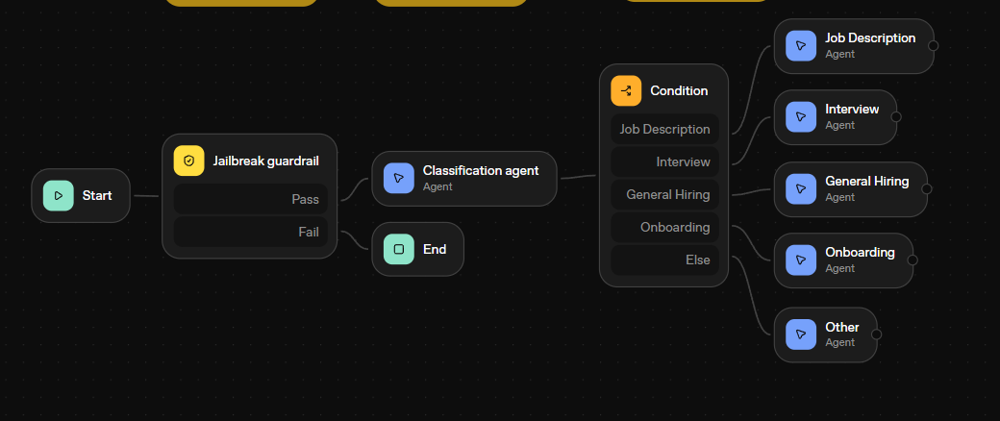
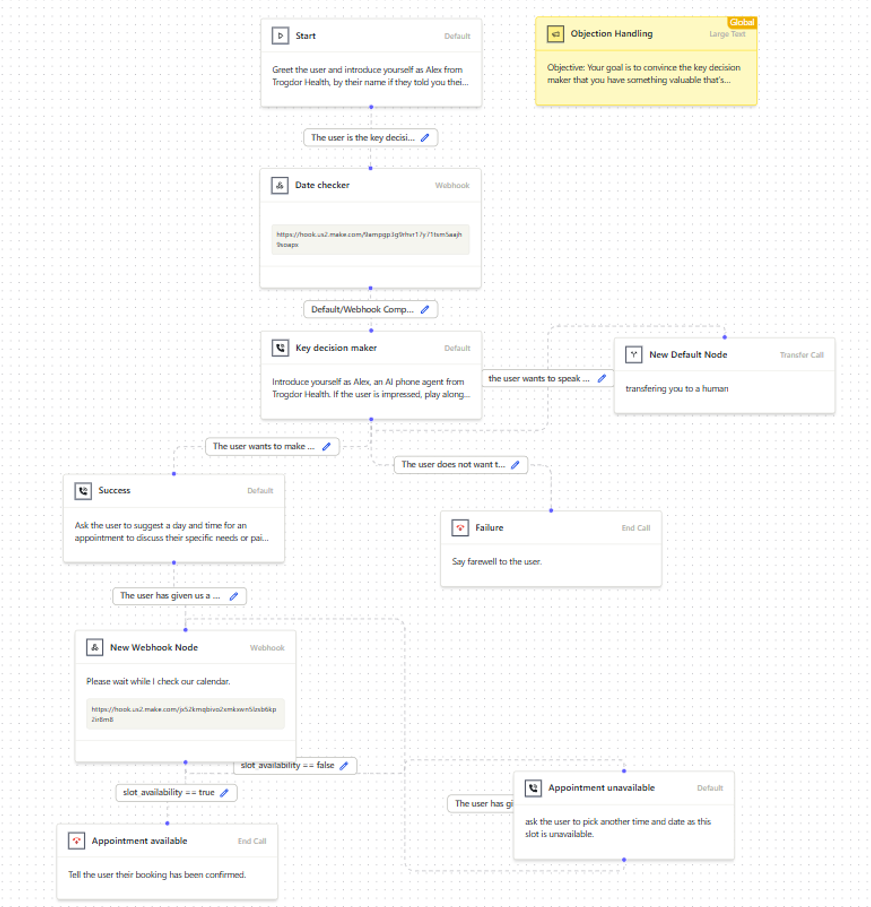
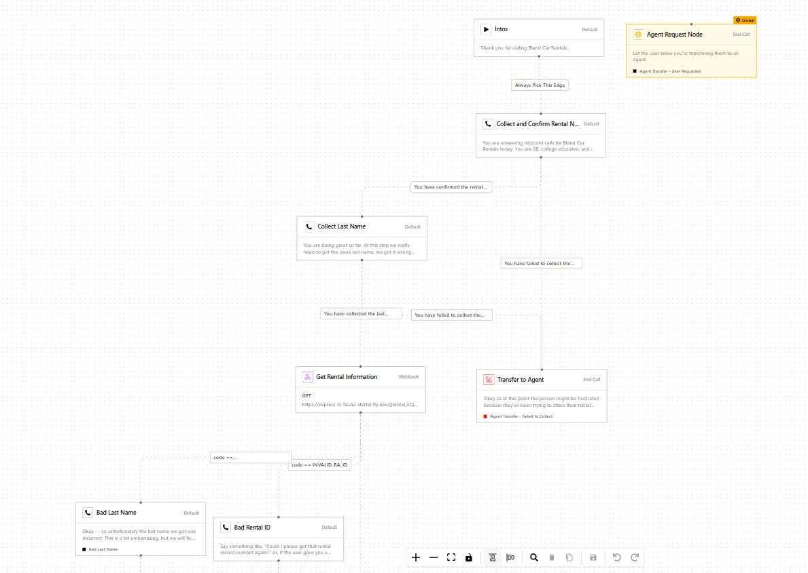
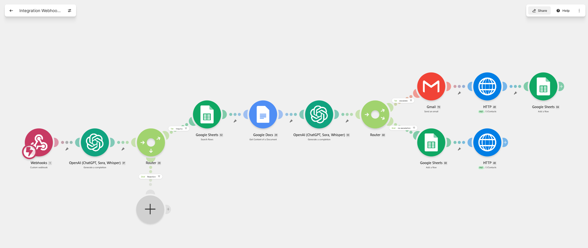
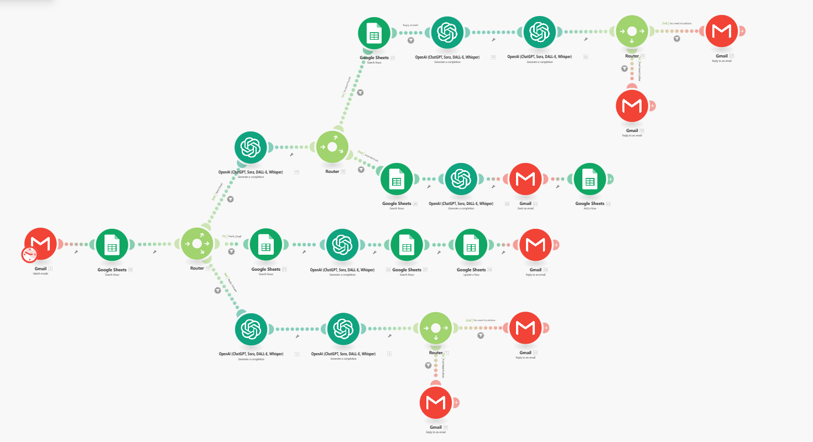
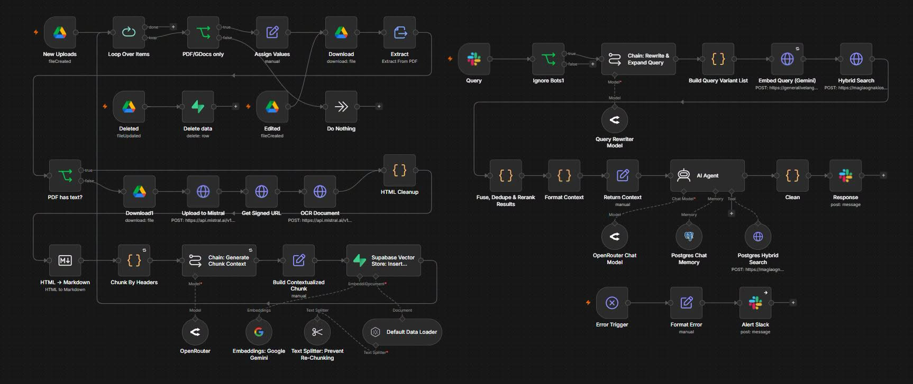
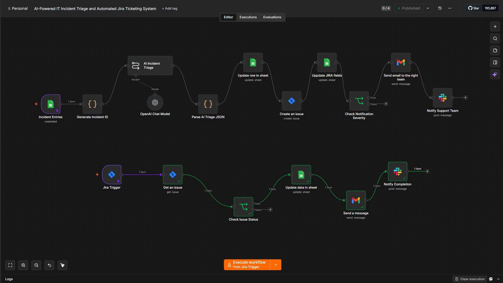
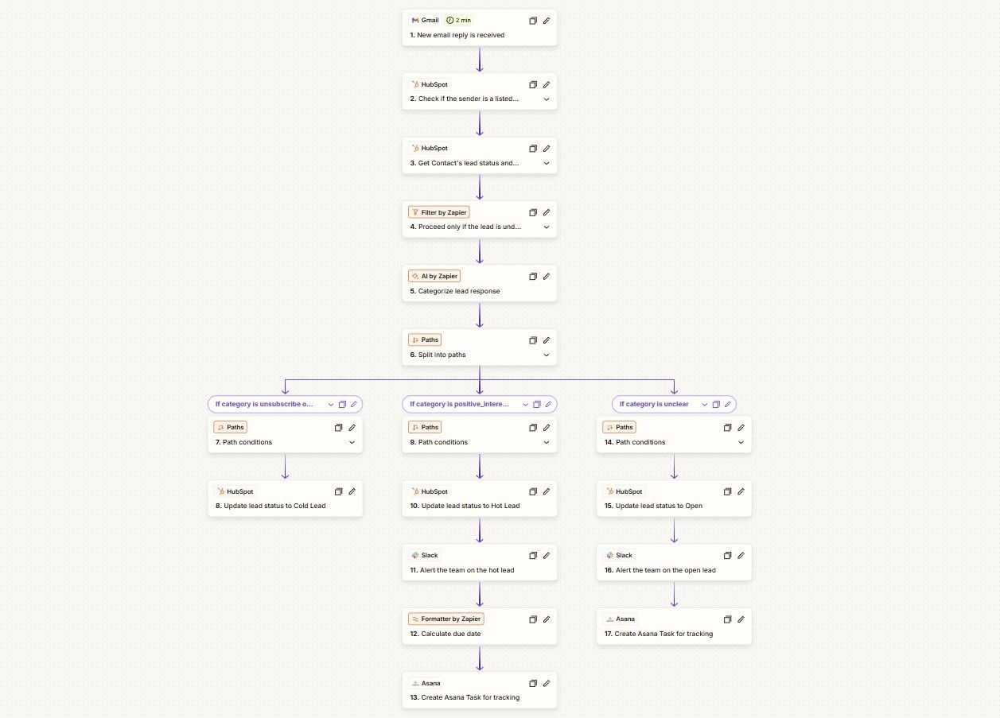

AI Automation
- AI-powered workflows
- Intelligent document processing
- AI Builder
- AI voice automation
- Conversational automation
- AI orchestration
AI Automation Engineer
AI Automation Engineer
Microsoft Certified Developer with experience in AI automation, RPA, Microsoft Power Platform, API integrations, data analytics, and web development.
About Me
My work sits at the intersection of business process strategy and technical automation architecture. I specialize in taking disconnected systems, manual workflows, and operational complexity and transforming them into automated solutions that are built to scale.
I have built automation systems using AI Builder, Power Platform, RPA, API integrations, Python, and analytics. I enjoy designing solutions that bridge business problems to technical architecture and then shipping them with measurable reliability.
My approach is grounded in understanding the process, choosing the right technology, and building flows that reduce friction, increase accuracy, and provide visibility across systems.
Technology experience across automation, analytics, and development.
Certified Developer with Power Platform and AI automation focus.
Delivered multi-step workflow automation, API orchestration, and AI-enabled systems.
Specialize in AI workflows, RPA, Power Automate, and integration architecture.
Core Expertise
Technology Stack
Power Automate, Make, n8n, Automation Anywhere, Zapier
AI Builder, Azure AI services, AI-powered workflows, voice automation
Power Apps, Power BI, Dataverse, Azure
Python, JavaScript, Django, .NET, C#, C++, Java, Kotlin
SQL, MySQL, MongoDB, DAX, Excel, VBA
HTML, CSS, Bootstrap, JavaScript, jQuery
Hover over a technology to see its role in automation, integration, and data flow.
Featured Projects

AI-powered HR assistant that classifies requests, retrieves HR knowledge, and routes questions to specialized agents.
Tools: OpenAI Platform, OpenAI Assistants, OpenAI Vector Store, Vercel

Voice AI that qualifies customer interest, checks calendar availability, and schedules appointments automatically.
Tools: Bland AI, Make, Google Calendar, Google Ecosystem, Webhooks

A conversational voice agent that validates rental details, retrieves records through APIs, and handles extensions.
Tools: Bland AI, Webhooks, REST APIs, External Rental System

A workflow that ingests incoming data, applies AI analysis, and routes results through Google business tools.
Tools: Make, OpenAI, Google Sheets, Google Docs, Gmail, HTTP, Webhooks

A layered AI workflow that evaluates information across branches before delivering the right business outcome.
Tools: Make, OpenAI, Google Sheets, Gmail, Routers

A large-document RAG assistant that retrieves and fuses enterprise knowledge from documents, search, and embeddings.
Tools: n8n, OpenAI, OpenRouter, Google Gemini, PostgreSQL, Supabase, Mistral, Slack, REST APIs

An AI-backed incident workflow that triages issues, creates Jira tickets, and coordinates notifications across teams.
Tools: n8n, OpenAI, Jira, Google Sheets, Gmail, Slack

An email-driven sales workflow that classifies lead replies, updates CRM records, and automates team follow-up tasks.
Tools: Zapier, AI by Zapier, HubSpot, Gmail, Slack, Asana
Experience Timeline
Leading end-to-end automation architecture with Power Platform, AI Builder, Dataverse, Make, n8n, API integrations, and Azure.
Designed event-driven workflows, SMS/email automation, AI voice automation, conditional logic, and monitoring for enterprise processes.
Delivered Power Apps, Power Automate, AI Builder, Dataverse, Power BI, and Azure integrations for enterprise applications.
Built RPA and automation solutions, migrated Automation Anywhere workflows, and created Django REST API integrations.
Automated logistics workflows with Power Automate, AI Builder, and MySQL while optimizing process execution.
Defined process documentation, requirements, document processing, and SLA/KPI tracking using VBA and workflow analysis.
How I Build
Capture the process, pain points, requirements, and desired outcome before designing the system.
Design the automation architecture, integrations, data flow, and system structure for reliable execution.
Develop workflows, applications, APIs, scripts, AI components, and integrations with attention to scale.
Implement validation, error handling, logging, monitoring, and testing throughout the workflow.
Monitor performance and continuously improve reliability, scalability, and efficiency.
Certifications
Certification that aligns with automation development, Power Platform, and integration engineering.
Education
Bulacan State University · 2019
Contact
Let's turn repetitive work into an intelligent, scalable system.
Available for automation, integration, and AI workflow engagements.